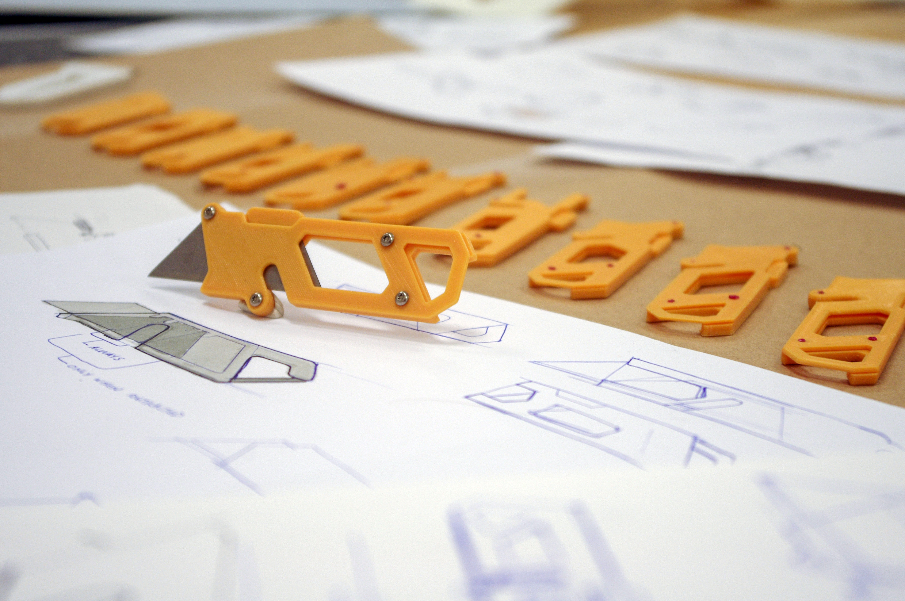

For a Junior project, Trayvax provided a design prompt for overlanding gear using their existing in-house production. Ideation began with a broad spectrum, covering bags, tools and truck accessories.
After many iterations, I produced a plastic prototype and display model. The design leverages an unused center area of the blade to always provide a sharp edge to cut rope or seatbelts in an emergency.